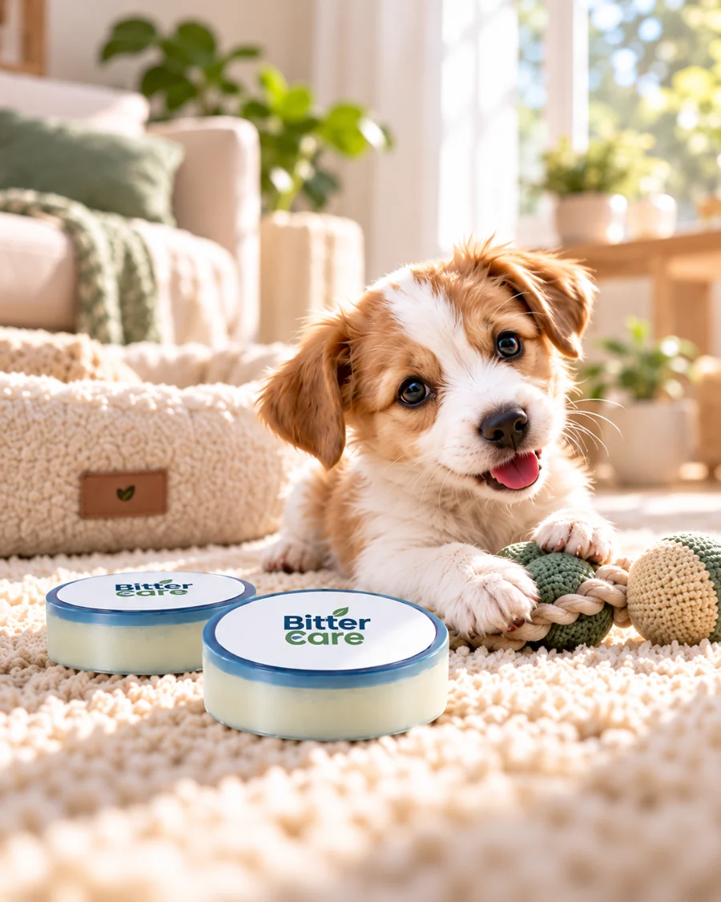
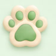
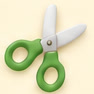
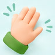
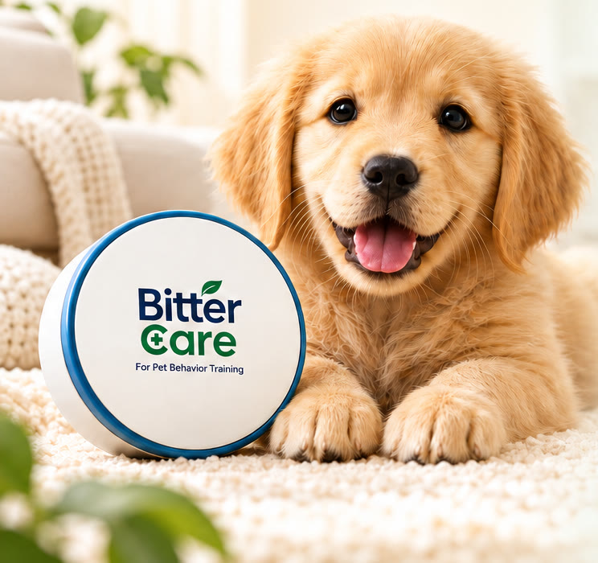

매끈한 표면에
가구·문틀처럼 입이 닿는 곳에 붙여 주세요. 천·러그·거친 표면은 접착이 어렵거나 끝이 들뜰 수 있어요.
사랑하는 만큼,
바른 습관도 함께. ♡
가구는 가구답게, 강아지는 사랑스럽게.
물어뜯는 자리에 붙이는 쓴맛 스티커, 비터케어.
영국산 프리미엄 원료 사용

비터케어는 이런 제품이에요
가구나 문틀처럼 강아지가 반복해서 무는 곳에 붙이는 행동 케어 보조 스티커예요. 필요한 만큼 잘라, 실제로 입이 닿는 곳에 밀착해 주세요.
강아지마다 반응이 달라요. 씹어도 되는 장난감과 놀이도 함께 제공해 주세요.
제품 원리 자세히 알아보기 →
가구도, 우리 아이도 편안하게아끼는 가구가 걱정될 때,
혼내기보다, 우리 아이를 위한 작은 변화.
자꾸 입을 대는 곳에 붙이는 쓴맛 스티커, 비터케어.
자르고, 붙이는 모습을 영상으로 확인해 보세요.

02필요한 만큼
03끝까지 꾹강아지마다 반응은 다를 수 있어요. 처음에는 보호자가 지켜봐 주세요.
우리 집에 쓰기 전
가구·문틀처럼 입이 닿는 곳에 붙여 주세요. 천·러그·거친 표면은 접착이 어렵거나 끝이 들뜰 수 있어요.
민감한 소재는 작은 부위에 먼저 시험해 주세요. 처음에는 보호자가 반응과 밀착 상태를 지켜봐 주세요.
스티커를 물고 뜯는 행동이 계속되면 제거하고, 씹어도 되는 장난감을 제공해 주세요.
개체별 성향과 감각 민감도에 따라 체감 차이가 있을 수 있습니다. 쓴맛에 대한 반응과 적응 속도도 다를 수 있으므로 처음에는 보호자가 지켜봐 주세요.
사용 환경의 온도·습도·마찰 빈도와 부착 상태에 따라 차이가 있습니다. 반응이 줄거나 스티커가 손상·들뜸 상태가 되면 제거하고 새 스티커로 교체해 주세요.
평평하고 건조한 매끈한 가구나 문틀 등 입이 닿는 곳에 사용해 주세요. 울퉁불퉁하거나 젖은 표면, 천·러그는 접착이 어려울 수 있습니다. 전선 보호대 등 다른 소재는 사용 가능 여부와 부착 상태를 먼저 확인해 주세요.
비터케어는 입이 닿는 곳에 쓴맛을 더하는 행동 케어 보조 스티커입니다. 스티커를 씹거나 삼키도록 두지 마세요. 물고 뜯는 행동이 계속되면 제거하고, 이상 반응이 나타나면 사용을 중단해 주세요. 원료와 상세 사용 안내는 ‘사용 전 확인’에서 살펴보실 수 있습니다.
표면 재질과 마감 상태에 따라 차이가 있을 수 있습니다. 고급 원목이나 특수 마감재처럼 민감한 소재는 눈에 띄지 않는 작은 부위에 먼저 시험한 뒤 사용해 주세요.
붙이는 쓴맛 스티커, 비터케어

자꾸 무는 몇 군데에
필요한 만큼 잘라 붙여보세요.
의자 다리부터 문틀까지
붙일 곳이 많다면 넉넉하게.
강아지가 자주 무는 가구와 문틀에 맞춰, 비터케어 쓴맛 스티커 5M 또는 10M를 선택하세요.
현재 가격·구성·배송 정보는 상품 페이지에서 확인해 주세요.무료 성향 체크
무료 성향 체크로 우리 아이를 이해해 보세요. 구매하지 않아도 이용할 수 있어요.
부착 위치부터 제품 문의까지. 상황을 남겨주시면 확인 후 이메일로 답변드리겠습니다.